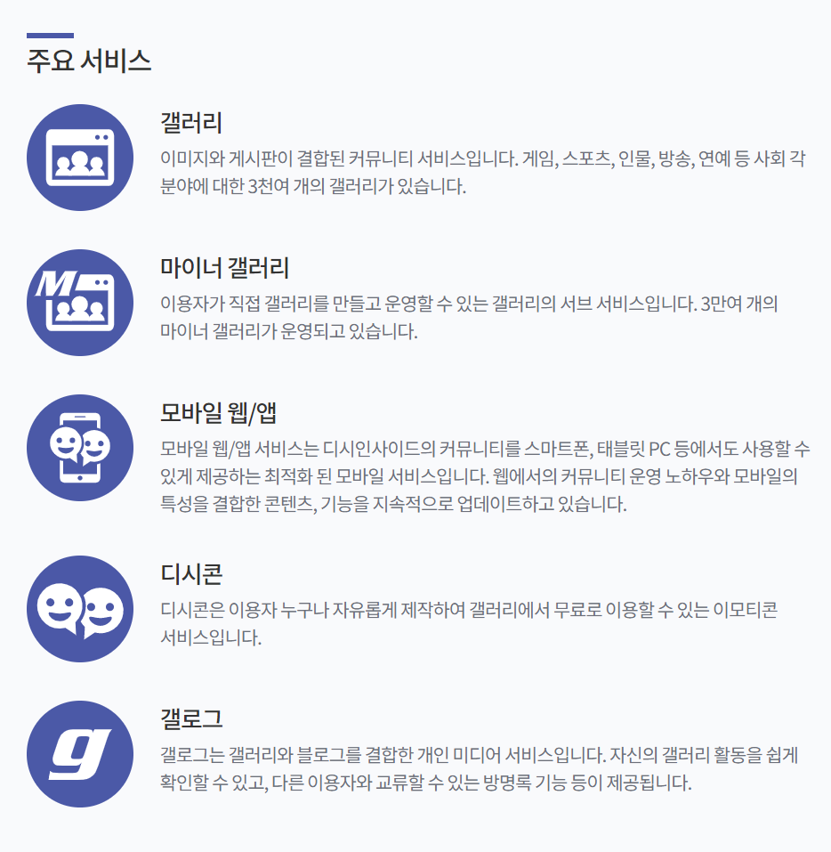
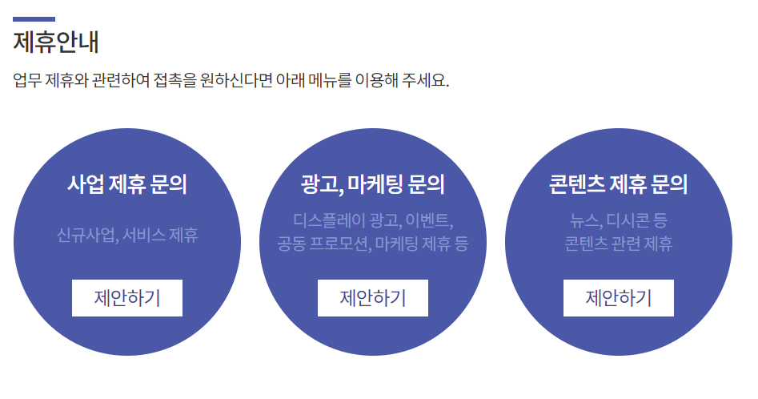
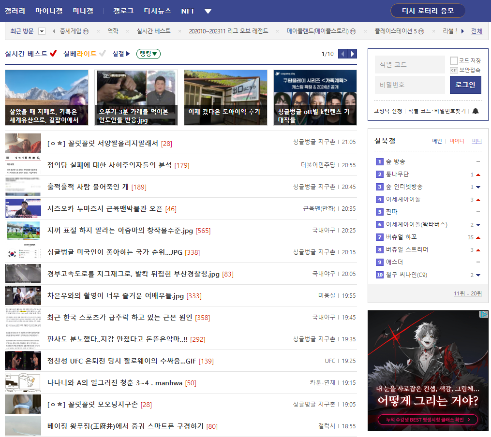
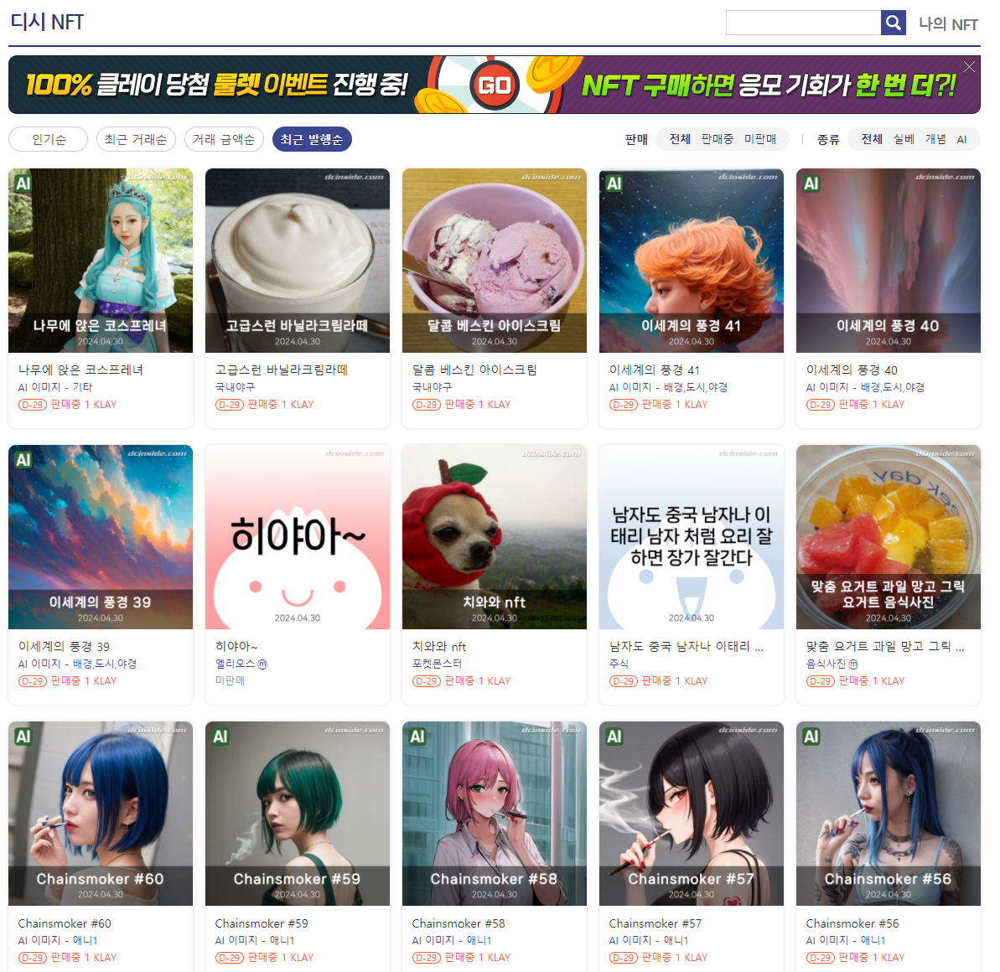

BLESS NET 경쟁사 홈페이지
- 경쟁사 1 오늘의 집
- 경쟁사 2 당근
- 경쟁사 3 디시인사이드
각 플랫폼 세부 정리
- 오늘의집 정리
- 당근 정리
- 디시인사이드 정리
디시인사이드
회사소개
커뮤니티 포털 디시인사이드는 대한민국 대표 커뮤니티로서 인터넷 문화의 한 축을 담당해 왔습니다.
현재 PC와 모바일을 통해갤러리, 마이너 갤러리, 갤로그 등 다양한 서비스를 제공하고 있으며.
국내 최고 커뮤니티 사이트로 자기매김하고 있습니다.
주요 서비스

제휴 안내

최초 홈페이지

NFT(대체불가능?)

Document
Set color